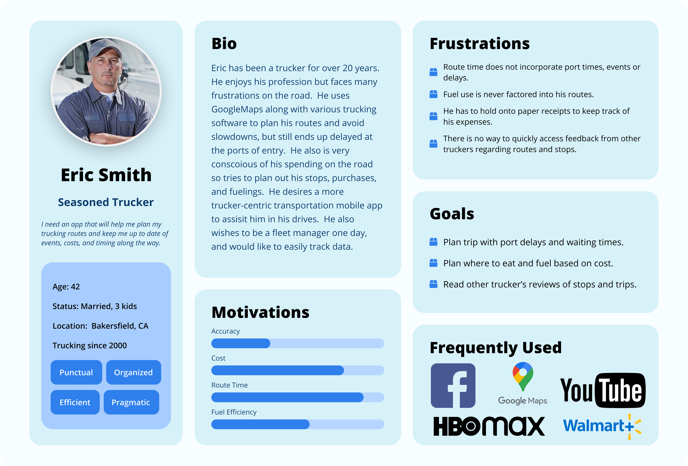
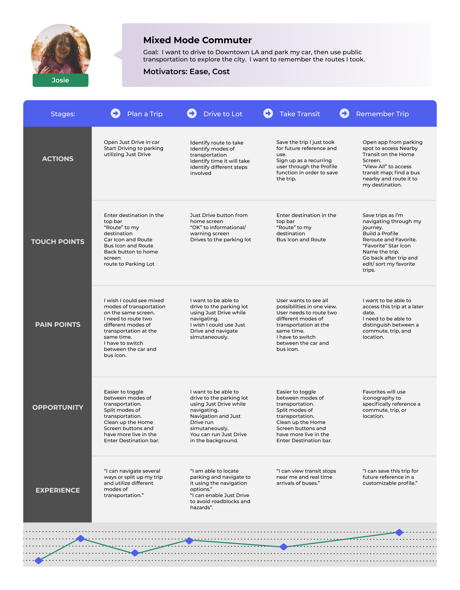
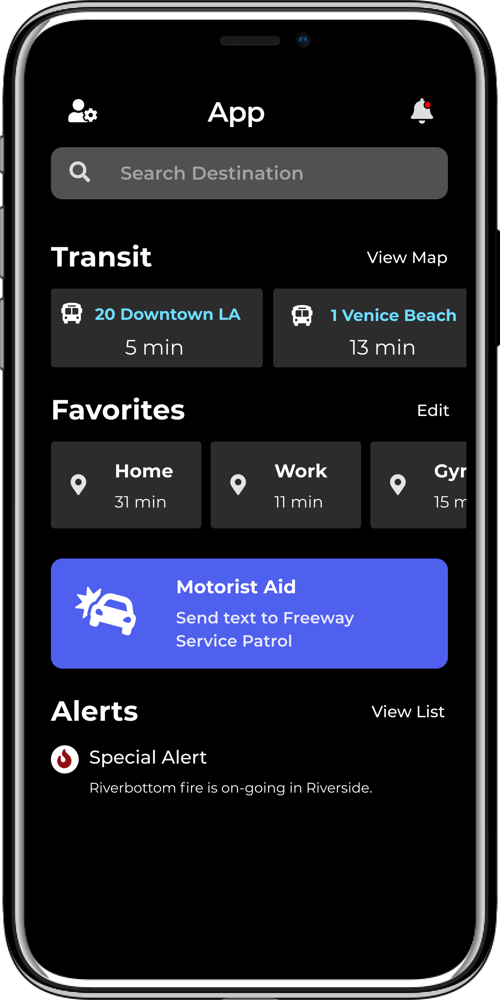
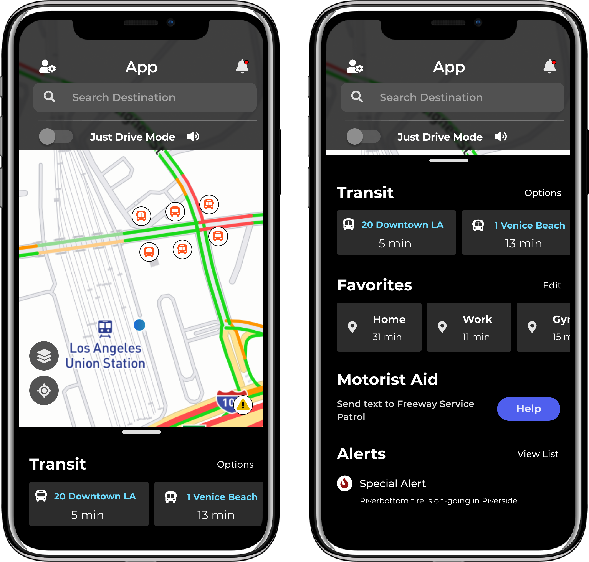

DrayFlex
Final Prototype
Problems
COVID-19 unveiled how fragile our global supply chains are. At the core of these supply chains are truckers. Right before these issues were revealed to the general public, I was tasked to work on a trucking application with Oz Engineering. Utilizing proprietary civil engineering technology that factored in travel time, events, hazmat issues based on drayage and truck type, dray-FLEX aimed to assist not only truck drivers in their journeys, but fleet management in their administration duties; creating a positive end-to-end user experience for all involved.
Research
We were able to interview three truckers and two fleet managers. All five interviewees were familiar with different types of trucker apps and dashboards. They often used multiple programs to complete one task, utilizing different features from each. Upon data synthesis, we realized that our app for truckers needed to be compact, action-oriented, and detailed.
Personas
Our user persona was embodied by Eric Smith, a seasoned trucker. He was an ambitious trucker who wanted to become a fleet manager someday and was familiar with managerial and day-to-day aspects of trucking. Eric is extremely busy and often overwhelmed in his line of work. He's always on the go, eyes on the road. Modern routing apps distract him with the incessant directions and changing screens. Trucker apps are too busy and oftentimes not useful. He is cost conscious and would like to be able to save money on fuel and at POI. He would like to arrive actually on time, not delayed by a terminal queue once more.
Initial Designs
I started this project with initial lean ux designs - existing somewhere between low and high fidelity, illustrating functionality and ease of use.
Initial Lean UX Designs
Usability Testing
I tested the inital Lean UX Designs to make user lead navigability, functionality, and design decisions.
Final Product
Dashboard MVP
Part of our final product was to be a dashboard for dispatchers and other admins to utilize. I used responsive components from the new mobile app to build dashboards that offered users different view, sort, and filter options.
Go 511
Final Prototype
Problems
SoCal Dept of Transportation wanted to revamp their 511 mobile application in an effort to provide motor and public transportation to users. However, many drivers reported interacting with their phones while they drove, leading to distracted driving deaths. Go511 app would utilize Just Drive to encourage distraction free driving and detailed transportation information to encourage use of public transportaiton.
Research
We looked at different transportation apps, including the basics like Apple and Google Maps. Since many users are already reliant on these applications to navigate, we had to focus on other requirements to highlight. Just Drive and transportation details were features we could offer that provided something different.
Personas
Our user persona is Josie, a mixed mode commuter. The mixed mode commuter uses a variety of modes of transportation to get around town - from the bus system, to her car, to biking and walking.
User Journey - Mixed Mode Commuter
This user journey explores Josie's journey and pain points along the way.
Initial Designs
One of the requirements was to highlight the "Just Drive" feature - a program that reads directions aloud for a truly hands free experience. The issue was that users couldn't tell the difference between navigating and Just Drive.
Another design problem we explored was a map based home screen versus a dashboard home screen.
Usability Testing
We tested 15 different users, having them narrate their experiences. From their feedback, we were able to garner that a map based homescreen and user experience made the most sense to implement. We also highlighted the Just Drive feature with the use of a toggle.
Final Product
Our final MVP was released in the app store as a 511 app for the SoCal region.